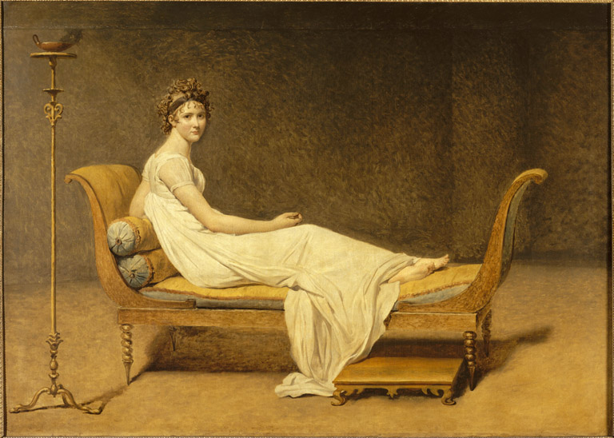
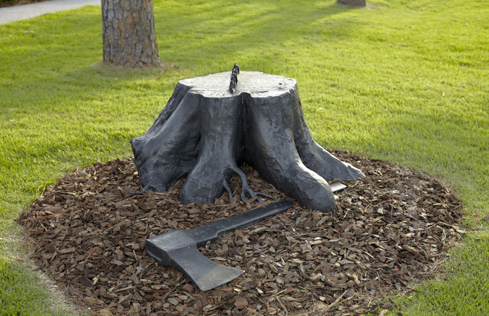

Rene Magritte一直是私心很喜欢的艺术家，作为surrealism（超现实主义）的代表人物，他的画在mind-blowing的同时还时常有一种amusing的感觉。
机缘巧合收到一张Rene Magritte雕塑的照片，了解后才发现他原来在生命的最后一年（1967年）做了8个雕塑，元素都来自他之前的画作。这让我产生了极大的兴趣，因为感觉surrealism和雕塑应该是不相容的（surrealism是超现实，而雕塑得存在在客观现实中，不过可能这只是在不同的范畴内的讨论）。然而在网上搜索半天却没有看到其他7个雕塑的信息，但发现了一本1968年的书，而且幸运的是，波士顿公共图书馆藏有一本。
这本书的作者是Alexander Iolas，是一名画廊主和收藏家。他合作过的有名的艺术家有Andy Warhol, Yves Klein等等，当然也有Rene Magritte。
书的开头是英文和法文的这位作者对这8个雕塑想法来源和制作过程的简短介绍，之后是8个雕塑的照片，包括一些设计草图。
Magritte在1967年6月23日造访了Verona，修改最终的蜡模，而后这些蜡模被浇铸成铜质雕塑。可惜他在1967年8月15日去世，所以生前很可惜的并没有看到雕塑的成品。
La Joconde
这张画的确给人感觉很快乐，超现实的元素也明晃晃的摆在我们面前：本该在窗帘的『外面』看到的景象成为了窗帘本身。那么在天空窗帘『外面』应该是什么呢？Magritte自己对『天空窗帘』的解释是：”the sky takes the shape of a curtain because it is hiding something… we are surrounded by curtains.”
这幅画雕塑化之后看起来只是三块窗帘布（其实是铜）而失去了天空的surrealism元素。起初Magritte是想过把中间那块大的窗帘画上天空的。不知道最后是否定了这个想法还是因为没有时间未能实现。
Madame Recamier
Madame Recaimer原为Jacques-Louis David的一幅油画，现藏卢浮宫。Madame Tecaimer（Juliette Récamier）是一位银行家的妻子，当时著名的交际花。
 Madame Recamier, Jacques-Louis David, 1826, Louvre Museum
1951年，『致敬』David的Madame Recamier，Magritte也画了一幅，但将原画中的女性变成了一具『正襟危坐』的棺材。也许这是他在嘲讽交际花表面光鲜但实际上已是心死之人？也许是在感慨年华易逝，当年的美人现在也只是棺材里的骸骨？不过不管是什么样的理解，这幅画都有一种amusing的感觉。为了制作这个雕塑，Magritte找了和画中匹配的沙发椅，灯和脚踏，并自己设计图纸，专门找人打造了这个异型棺材。
La Folie des Grandeurs
女性身体部分空心的，像俄罗斯套娃一样地堆叠在一起，但皮肤质感又是非常准确的，一眼看上去有些creepy。远处的天空也扭曲了，一个个小方块堆叠起来，和窗边的人体一样。这是他第一个想雕塑化的作品，可能因为过去的雕塑也大多数是人体雕塑吧，这个雕塑感觉连接了历史和超现实主义。想起了一个对good idea的定义：一个good idea需要和人们熟悉的东西有联系，但是又有其不同之处。
Le Puits de Vérités
一条孤零零的腿非常random的出现在了墙边。这幅画的雕塑化倒是有点意思。雕塑化之后，这条『腿』失去了背景，想象它可以出现在任何地方，突然给人一种活了的感觉。
Le Thérapeute
这幅画翻译过来是The therapist。一个躯体空心的人是Magritte很喜欢的一个题材，空心的地方可以是笼子和鸟，天空，或是其他看起来奇奇怪怪的元素。
这个雕塑选取的是笼子和鸟的主题。为这一幅画做雕塑的时候，Magritte专门找了一个体格很大的人，把他的坐姿倒模下来（这里不是很确定理解正不正确，原文为”he demanded that a very large man be found and whose exact impression be taken while in sitting position.”）
Les Graces Naturelles
个人很喜欢这个作品，是叶子长着长着变成了鸟，还是鸟生活在树里逐渐与其融为一体？他们还会飞走吗？能光合作用么还是只能等吃的飞到他们嘴里？（问题宝宝上线）这个元素Magritte也画过很多版本。
La Race Blanche
这个作品名称直译是“白种人（The White Race）”。雕塑只选取到鼻子的部分。除了嘴以外眼睛，耳朵，鼻子的数量都不对。还看到一个解读说他对于眼睛，耳朵，嘴和鼻子的排列表现出了人类社会普遍的不同感官重要性的阶层划分，即视觉>听觉>味觉>嗅觉。
Les Travaux d’Alexandre
劳动的亚历山大是一个被砍掉的树桩，但是“手里”握着一把斧头。这种设定很容易让人想到是这把斧头砍的树桩，甚至可能是大树自己砍了自己。不过看原画可以发现亚历山大是在森林中，看起来是握着一把斧头的伐木人，不禁联想到很多被xx欺负的人最终却拿起了当时欺负自己的武器欺负自己的同类，仿佛遗忘了自己被欺辱的历史。前阵正好看到这样一句话，有些类似：“斧子砍向树木的时候，那木头做的斧柄，洋洋得意。”
 The Labors of Alexander, Rene Magritte, 1967, New Orleans Museum of Art